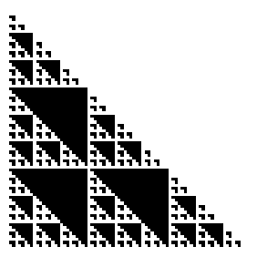
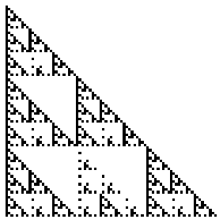
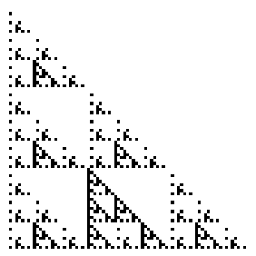
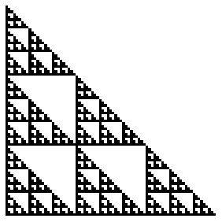

| The remainders of division by 3 are 0, 1, and 2. Here are
some views of Pascal's triangle (mod 3). Here we shade the numbers |
|  |
 |
| congruent to 0 |
congruent to 1 |
|
|  |
 |
congruent to 2 |
congruent to 1 or 2 |
|
| Alone, the numbers congruent to 1 (mod 3) or to 2 (mod 3)
do not form a clean pattern, but those congruent to 1 or 2 (mod 3) do. |
| The Pascal's triangle coefficients congruent to 1 or 2 (mod 3)
form a relative of the gasket, consisting of 6 pieces, each scaled by a factor of
1/3, so with dimension log(6)/log(3). |
| Because this dimension is < 2, we see again that in the n -> infinity
limit, the probability of finding a Pascal's triangle coefficient that is not
a multiple of 3 is 0. |